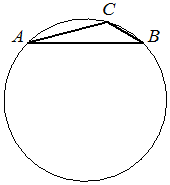

Впишите правильный ответ.
В треугольнике сторона равна , угол равен Найдите радиус описанной около этого треугольника окружности.

КЭС: 7.1 Фигуры на плоскости
Тип ответа: Краткий ответ
Источник ФИПИ